Esőerdők világa
Miért fontosak az esőerdők?
A trópusi esőerdők az Egyenlítő két oldalán húzódnak Dél-Amerikában, Közép-Afrikában és Délkelet-Ázsiában. Itt egész évben meleg van, és szinte minden nap esik: évente 2000–4000 milliméter csapadék is lehull.
Bár a szárazföldnek csak kis részét borítják, a Föld ismert növény- és állatfajainak több mint fele itt él. Az esőerdők fáiban rengeteg szén raktározódik, a párologtatásukkal pedig a környező tájak csapadékát is befolyásolják.
Évről évre hatalmas területeket vágnak ki fakitermelés, legelők és ültetvények miatt. Ha egy esőerdő eltűnik, vele együtt fajok ezrei és a bolygó egyik fontos éghajlat-szabályozója is elvész.
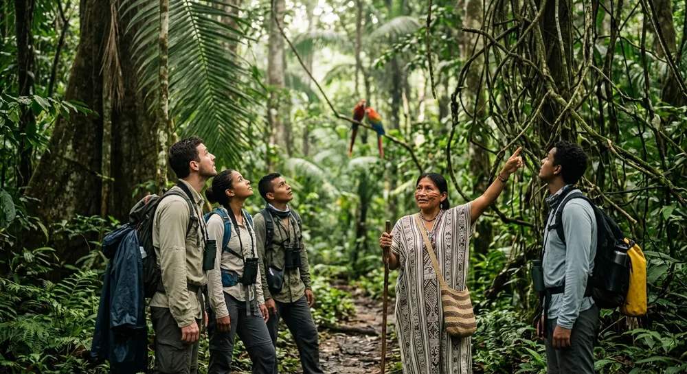
Az esőerdő szintjei
Az esőerdő több egymás feletti szintből áll. Mindegyikben más a fény, a páratartalom és az élővilág.
Egy-egy óriásfa 50–60 méter magasra is megnő, és kilóg a lombkorona tetejéből. Itt éri a legtöbb napfény és szél, a levegő is szárazabb, mint lejjebb.
Itt él például a hárpia, amely a lombok közül kapja el a majmokat és a lajhárokat.
Nagyjából 30–45 méter magasan a fák koronái szinte összefüggő tetőt alkotnak. A napfény nagy része itt nyelődik el, ezért ez az erdő legélénkebb része: a fajok többsége a lombkoronában él.
Itt él például a tukán, a pókmajom és a háromujjú lajhár.
A lombkorona alatt félhomály van, ide a napfénynek csak néhány százaléka jut le. A növények nagy levelekkel próbálnak minél több fényt elkapni, a fiatal fák pedig évekig várnak egy résre.
Itt él például a jaguár, a levelibékák és a boák.
Az erdő alja sötét és nedves. A lehulló levelek a meleg miatt néhány hét alatt lebomlanak, ebben gombák, termeszek és rengeteg rovar segít, ezért a talaj meglepően vékony.
Itt él például a tapír, az óriás hangyász és a levélvágó hangyák.
Galéria
Lapozz végig az esőerdő arcain: lombkorona, panorámák, rejtett zugok és néhány meglepő tény. Minden ablak külön léptethető.
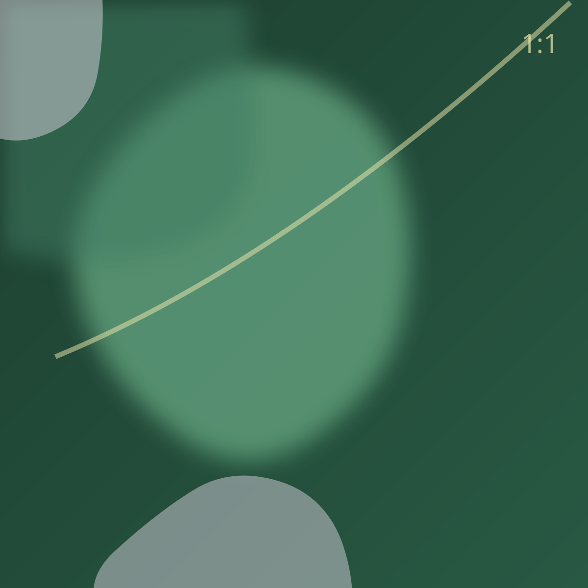
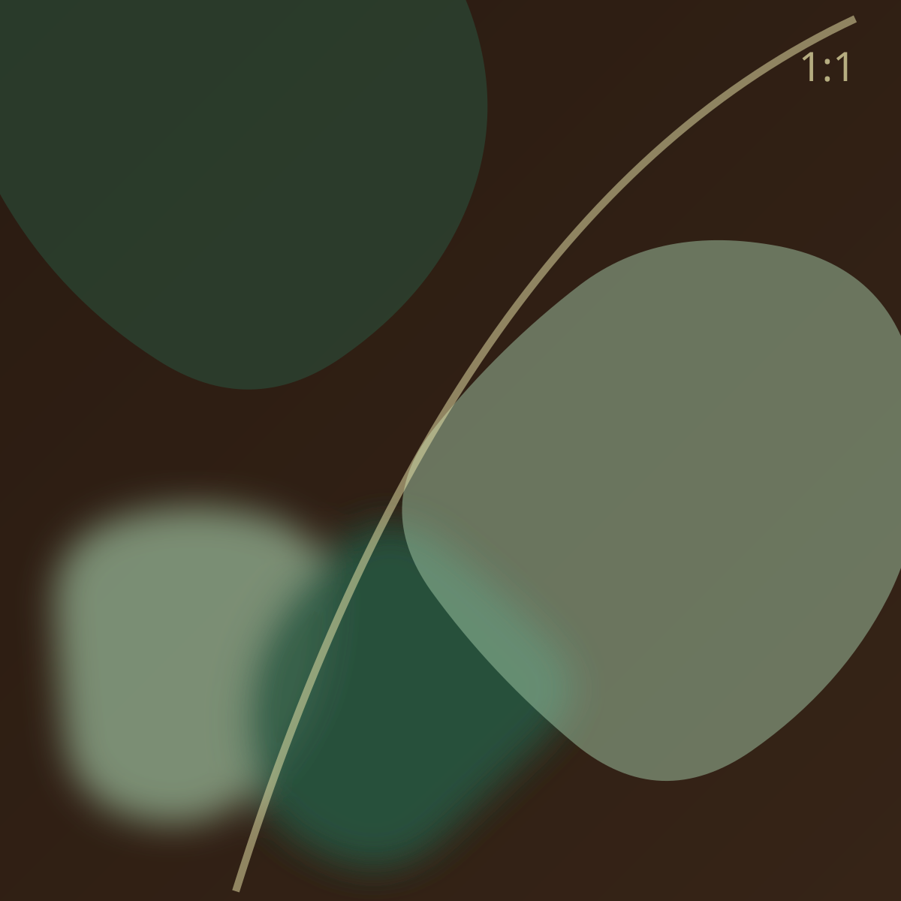
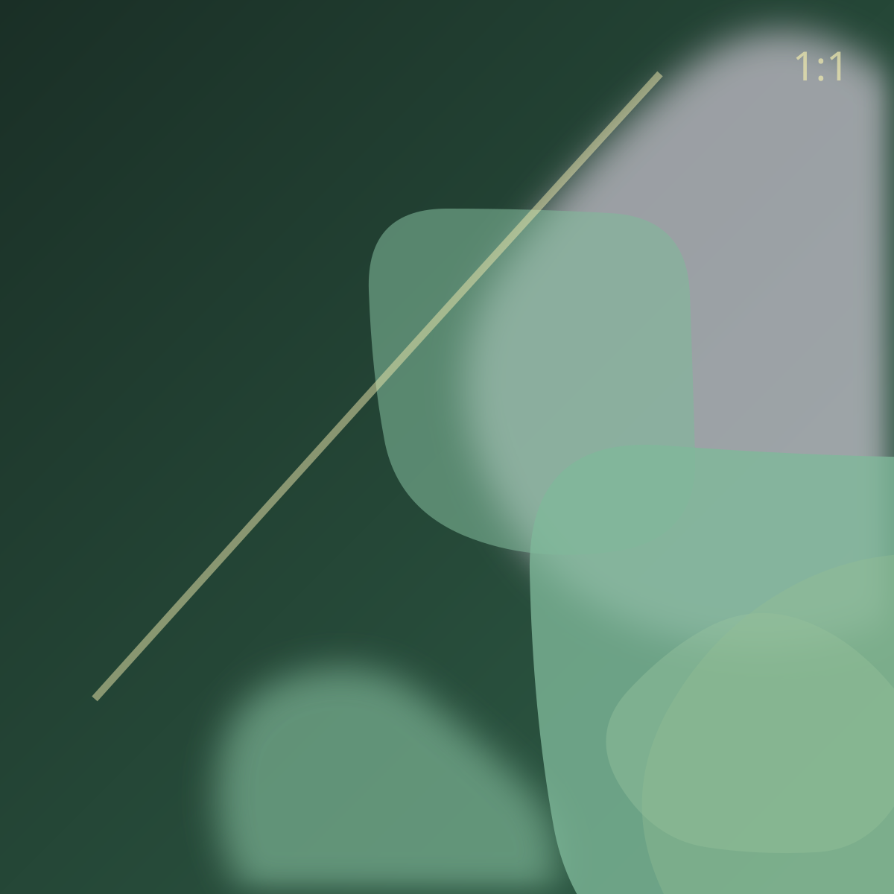
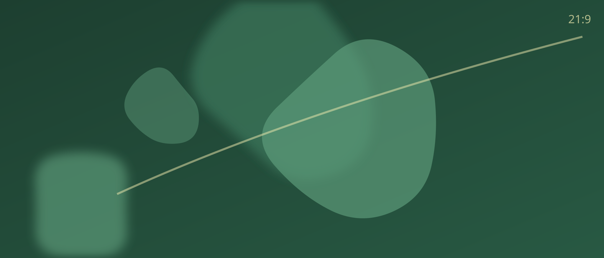
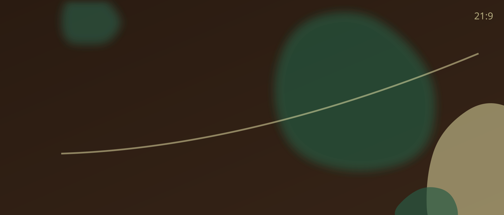
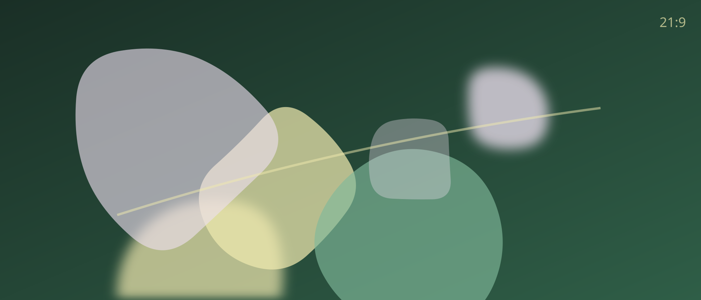
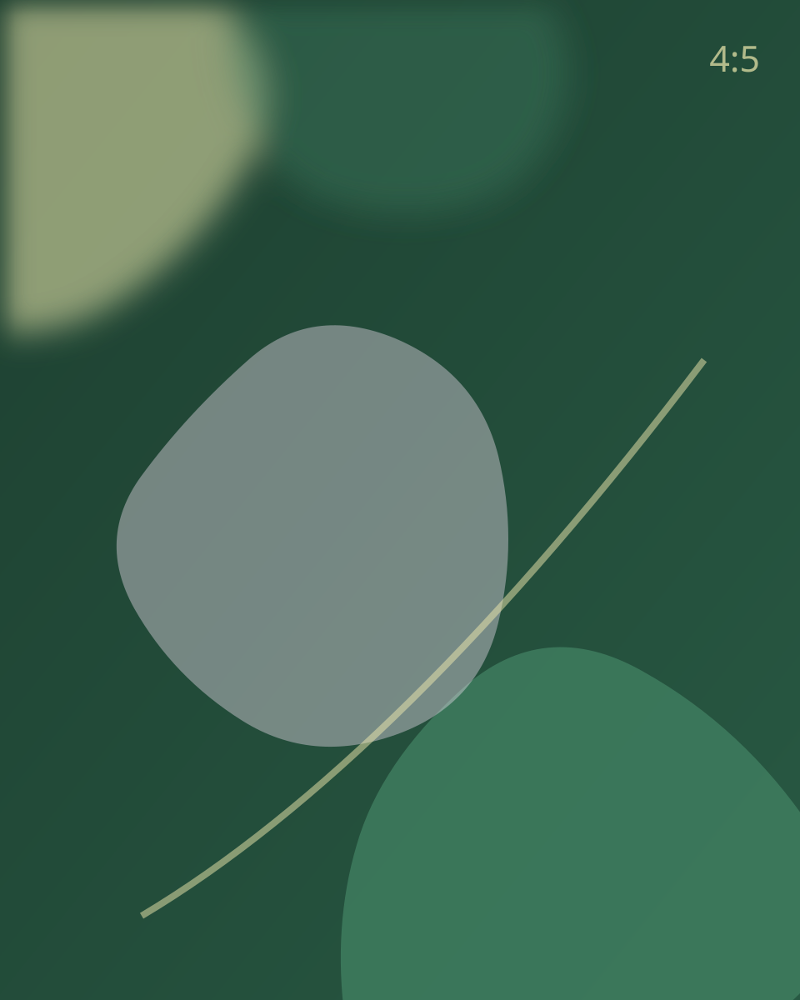
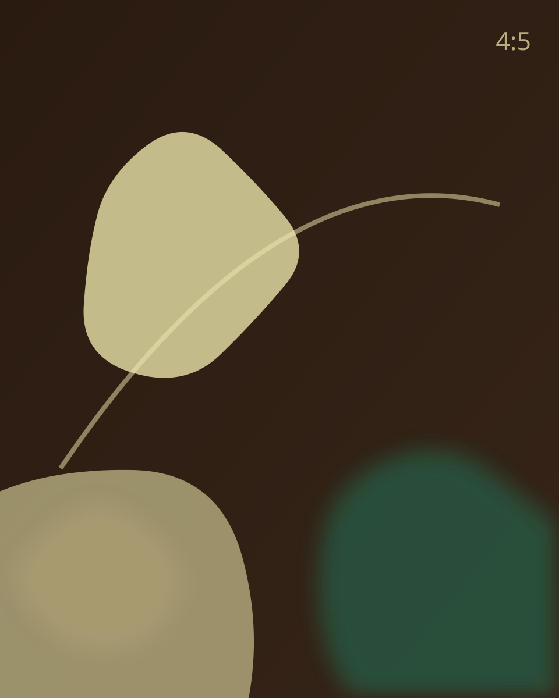
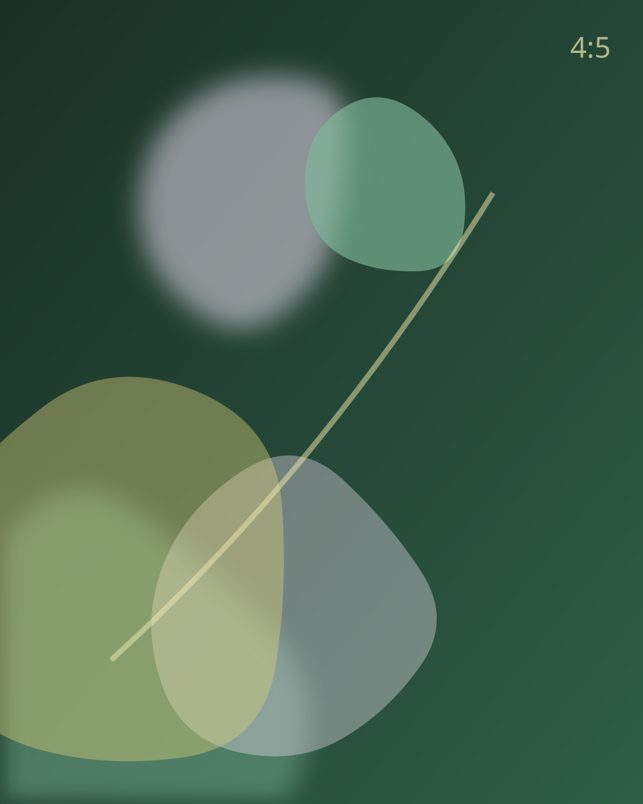
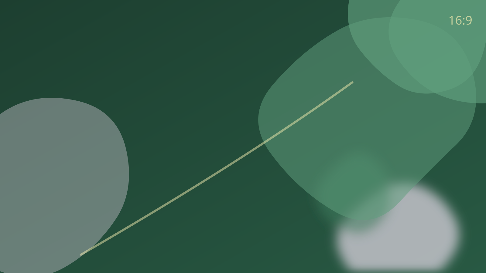
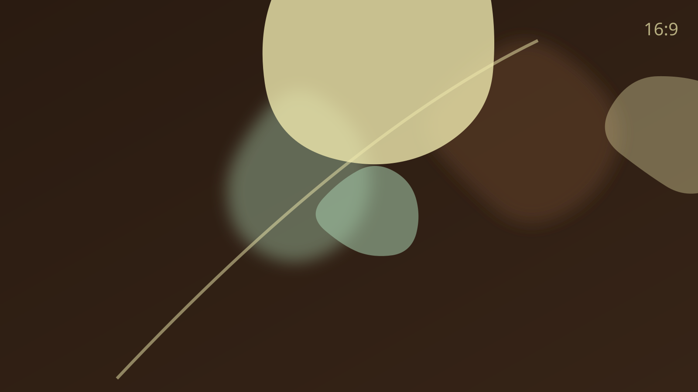
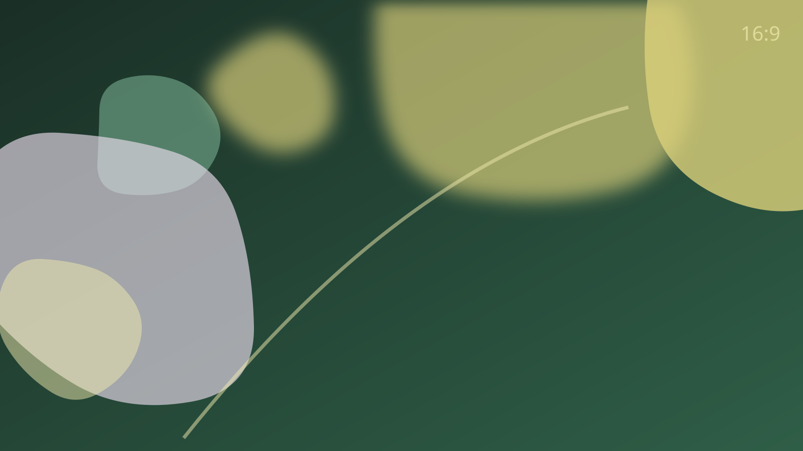
Meddig húznád ki a vadonban?
A kvíz tíz kérdésből megmutatja, mekkora eséllyel élnéd túl az esőerdőt. Előtte próbáld ki ezt az egyet.